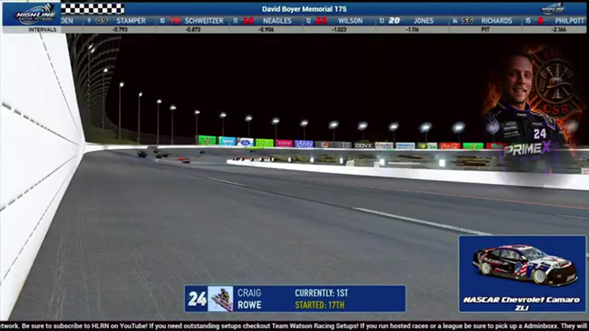

Ross Campoli
Team assignment not stated in the structured owner record.
A REVIEWED STORY FILE
- Official files
- 4
- Central editions
- 1
- Exact tape cues
- 3
- Accepted podiums
- 0
Ross Campoli appears in 4 official HLRN broadcast files across Season 2. The current result ledger does not assign this driver a supported top-three finish. A consistently stated team affiliation remains open for owner review. The currently indexed source window runs from March 16, 2026 through July 20, 2026.
Highline Central supplies 1 bounded race edition, while the primary chapter index supplies 3 direct jump points. No repeat track fingerprint is yet supported. The densest direct-tape categories are incident (2 cues) and finish (1 cue). Those counts describe where the name is easiest to find; they are not fault, pace, or performance grades. A source-attributed car frame is published with its original video and timestamp. That is the current discovery map for Ross Campoli.
Official name signals are used for discovery only. They do not become starts, points, incident counts, or an ability grade. This page is deliberately detailed about the tape and restrained about the unavailable competition record. Separately, 1 Highline Live file sits on the bonus shelf and never enters the official season ledger. The displayed name is labeled transcript normalized; that status remains visible so an owner roster can strengthen or correct the identity without rewriting the evidence trail. Those boundaries define Ross Campoli's public HLRN file.
3 featured race-tape cues
These are discovery routes into complete HLRN broadcasts, not performance grades or inferred results.
- S2 / R4 · FINISH
Craig Rowe reaches the EchoPark Speedway checkered
S2 / R4 at 3:22:51: The primary tape calls Craig Rowe at the EchoPark Speedway checkered and carries the first replay of the finish. The result label is tied to the accepted ledger.
EchoPark Speedway - S2 / R4 · INCIDENT
A Bowman bump turns Trevor Haley into Ross Campoli at EchoPark
Trevor Haley is turned after Nick Bowman bumps the No. 12 as it transitions up the track. Haley rotates into Ross Campoli, and the chain reaction reaches Jim Sagredo and other cars.
EchoPark Speedway - S2 / R1 · INCIDENT
A Ross Campoli blink precedes Daytona's next pileup
Ross Campoli spins with Brandon Showers nearby before the yellow appears. The replay suggests Campoli blinked out, then shows the No. 9 and No. 5 making contact as more cars arrive.
Daytona
Recent editions connected to Ross Campoli
Verified team history is not consistently stated. No position-specific top-three result is currently accepted. Name normalization remains reviewable against owner records.